← 返回阅读库 · 原论文目录
论文讲解阅读文档 · 论文精读 · v256
谷歌DeepMind再放大招！推理提速100%，KV缓存减半：MoR
视频时长 00:13:45；讲解文字 4,437 字符；提取讲解画面 75 张。按视频原顺序阅读，每段文字保留时间戳。
文字来自整段视频的自动语音转写，按自然停顿分段，并与 PPT / 论文页面 / 演示画面对齐。未将讲解压缩为摘要；术语、数字和口述公式请结合画面及原论文核对。 阅读稿已校正规范部分明确术语误识别；原始逐字稿和每处修改记录另行保留。
讲解画面为源视频截图（640×360），不是可编辑 PPT 文件。全片按每秒 2 帧扫描内容变化，逐步展开页保留；连续动画保留代表画面。清晰度受源视频限制。
下载完整资料包 · 含离线 HTML、PDF、Word、全部 PPT 画面和字幕。
原论文与材料
Mixture-of-Recursions: Learning Dynamic Recursive Depths for Adaptive Token-Level Computation · 下载完整 PDF（38 页）
按时间阅读
00:00:00–00:00:04 · 画面 001
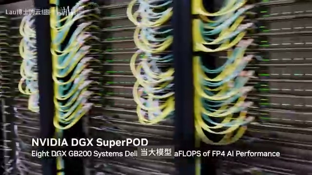
00:00:00–00:00:04 · 画面 001当大模型还在为千亿参数的算力焦头烂额时，谷歌的 DeepMind 深夜放出一篇核弹级的研究，这个叫 Mixture-of-Recursions 的新架构让 AI 推理快了一倍，内存省了一半。有人说它是真正的 Transformer 的终结者，连李飞飞的团队都表示它在语言任务上的表现属实惊艳。那这个连 Hinton 都在关注的参数共享加动态计算双 Buff 到底藏着什么门当
00:00:04–00:00:08 · 画面 002
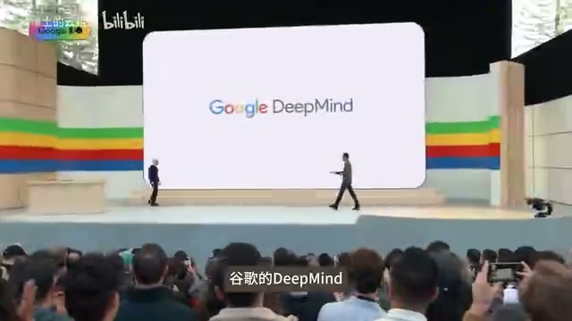
00:00:04–00:00:08 · 画面 00200:00:08–00:00:10 · 画面 003
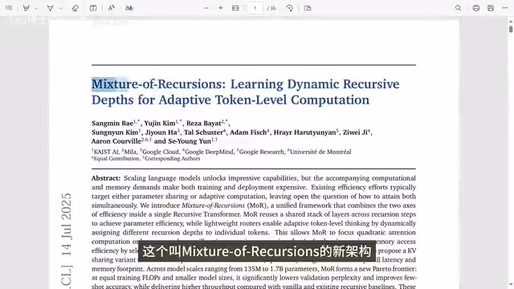
00:00:08–00:00:10 · 画面 00300:00:10–00:00:12 · 画面 004
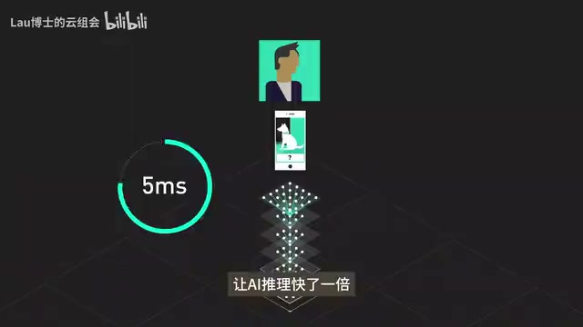
00:00:10–00:00:12 · 画面 00400:00:12–00:00:15 · 画面 005
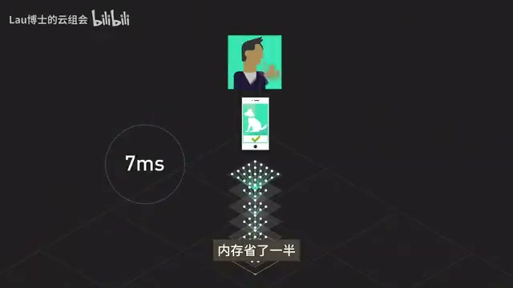
00:00:12–00:00:15 · 画面 00500:00:15–00:00:16 · 画面 006
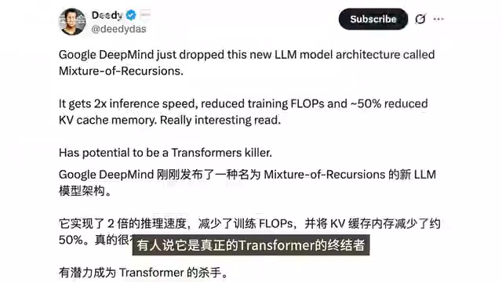
00:00:15–00:00:16 · 画面 00600:00:16–00:00:20 · 画面 007
00:00:16–00:00:20 · 画面 00700:00:20–00:00:24 · 画面 008
00:00:20–00:00:24 · 画面 00800:00:24–00:00:28 · 画面 009
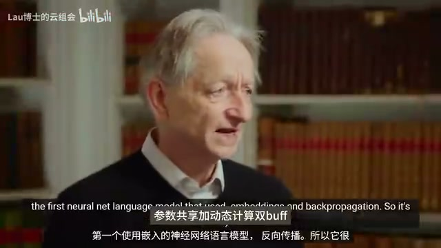
00:00:24–00:00:28 · 画面 009本期我们就来一起拆解这篇谷歌最新论文研究，看 MOR 如何在 AI 算力军备竞赛中杀出一条血路。欢迎来到力武博士的云主会，我们每周都将至少有一篇高质量的论文精读发布出来。相信在一系列的论文学习以后，你就能成为人工智能领域的专家
00:00:28–00:00:32 · 画面 010
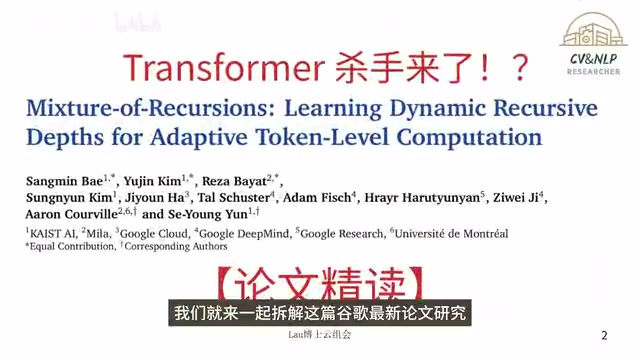
00:00:28–00:00:32 · 画面 01000:00:32–00:00:36 · 画面 011
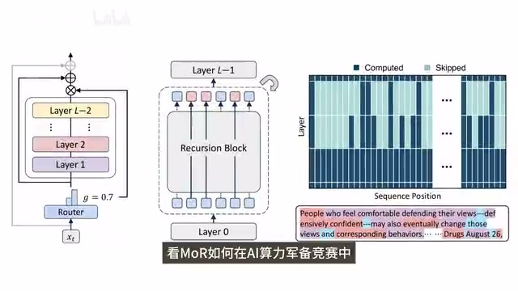
00:00:32–00:00:36 · 画面 01100:00:36–00:00:44 · 画面 012
00:00:36–00:00:44 · 画面 01200:00:44–00:00:45 · 画面 013
00:00:44–00:00:45 · 画面 01300:00:45–00:00:49 · 画面 014
00:00:45–00:00:49 · 画面 01400:00:49–00:00:53 · 画面 015
00:00:49–00:00:53 · 画面 01500:00:53–00:00:57 · 画面 016
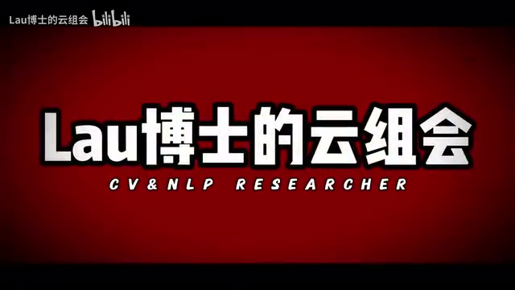
00:00:53–00:00:57 · 画面 016在深入 MOR 前，我们先回顾几个关键的经典工作，2017 年提出的 Transformer 模型通过堆叠多个自注意力层实现了强大的原建模能力，但它的每一层都有独立的参数。当模型规模扩大到千亿参数时，计算和内存的成本急剧的上升。就像建房子的时候，每一层都用全新的设计，既费材料又费工时。为了解决参数效率的问题
00:00:57–00:01:01 · 画面 017
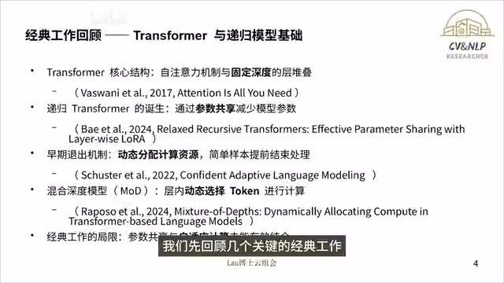
00:00:57–00:01:01 · 画面 01700:01:01–00:01:06 · 画面 018
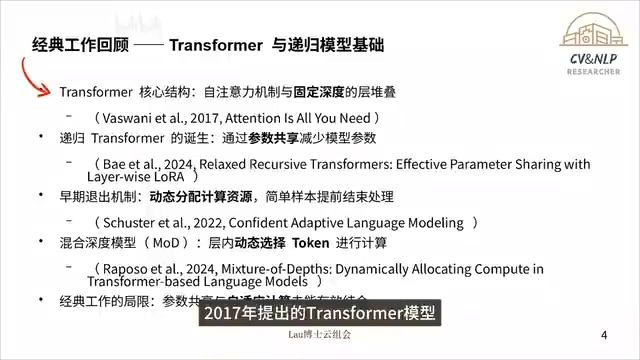
00:01:01–00:01:06 · 画面 01800:01:06–00:01:10 · 画面 019
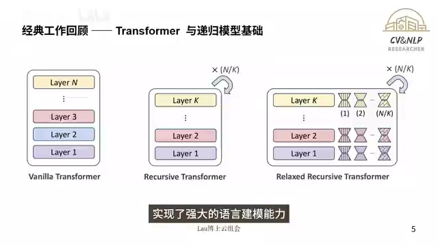
00:01:06–00:01:10 · 画面 01900:01:10–00:01:44 · 画面 020
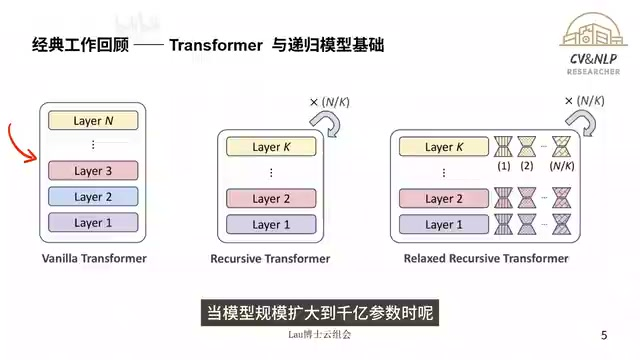
00:01:10–00:01:44 · 画面 020递归 Transformer 就营运而生。那不再为每一层设计新参数，而是重复的使用一组共享的参数。那类似的同一套模板呢，改多层楼。那比如呢，其中的一种模式就是将九层的模型拆分为三个递归块。那每个块呢，会用前三层的参数这个过程就有点像用一个卷积核学习一张图的特征，共享参数。区别就在于卷积是在层内进行的，而递归的 Transformer 是在层间进行的，同时还进一步的引入了 LoRA 的思想，利用矩阵的低秩特性，不直接更新预训练模型的权重矩阵，而是引入两个低秩矩阵，通过它们的层级
00:01:44–00:01:45 · 画面 021
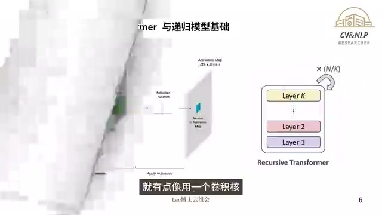
00:01:44–00:01:45 · 画面 02100:01:45–00:01:55 · 画面 022
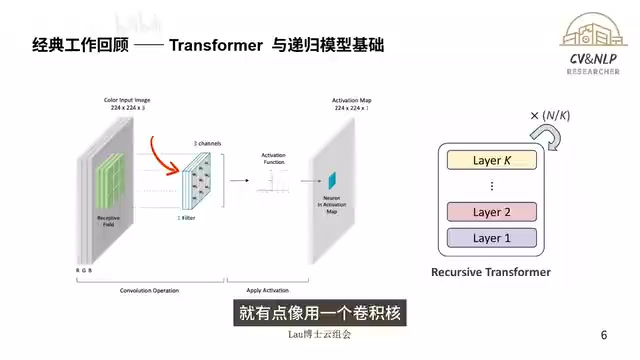
00:01:45–00:01:55 · 画面 02200:01:55–00:01:56 · 画面 023
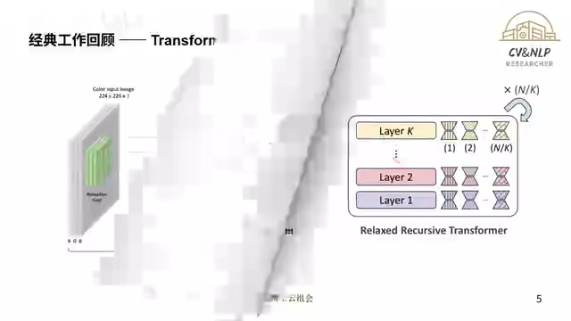
00:01:55–00:01:56 · 画面 02300:01:56–00:02:21 · 画面 024
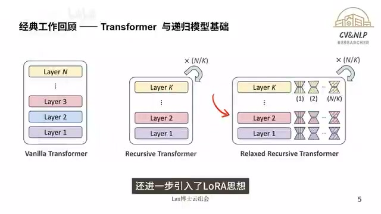
00:01:56–00:02:21 · 画面 024来表示权重的更新，有效的减少了参数数量。但早期的递归模型对所有的 token 都采用了相同的递归深度，那就像给所有学生布置同样难度的作业，那效率呢与此同时，研究人员提出了早期退出机制，让简单的 Token 在浅层就结束计算，复杂的 Token 继续深入处理。例如了 2022 年的工作 Confident Adaptive Language Modeling，就像老师根据学生的能力布置不同的作业量，而 MOD 混合深度模型则更进一步，在每一层动态的选择部分 Token 进行计算，那也是课堂上的老师指点名部分的学生回答问题
00:02:21–00:02:24 · 画面 025
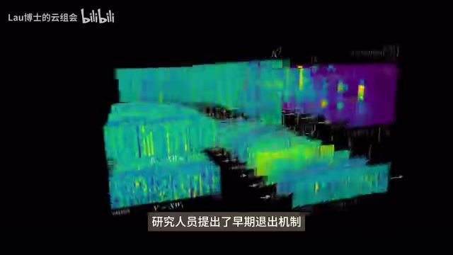
00:02:21–00:02:24 · 画面 02500:02:24–00:02:26 · 画面 026
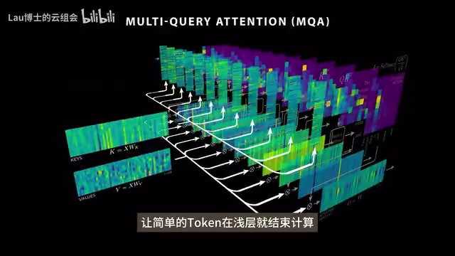
00:02:24–00:02:26 · 画面 02600:02:26–00:02:32 · 画面 027
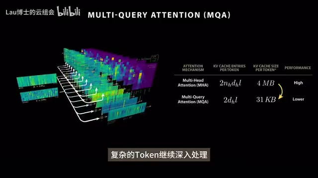
00:02:26–00:02:32 · 画面 02700:02:32–00:02:36 · 画面 028
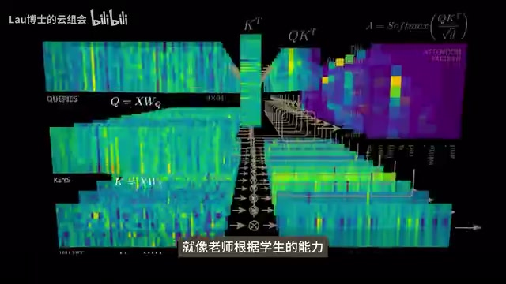
00:02:32–00:02:36 · 画面 02800:02:36–00:02:38 · 画面 029
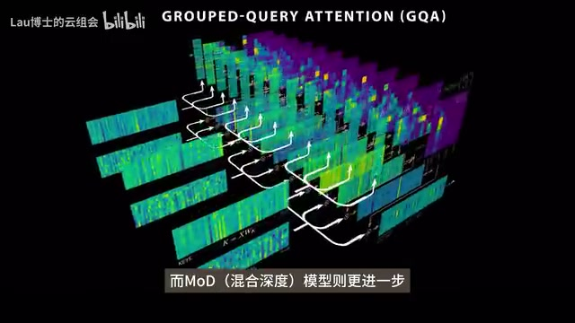
00:02:36–00:02:38 · 画面 02900:02:38–00:02:40 · 画面 030
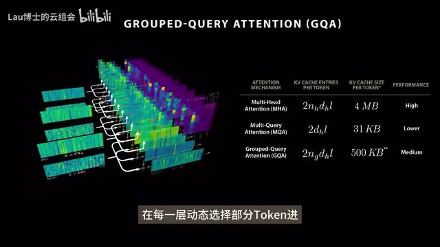
00:02:38–00:02:40 · 画面 03000:02:40–00:02:42 · 画面 031
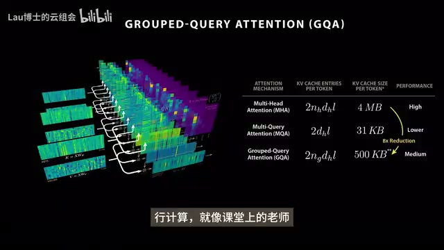
00:02:40–00:02:42 · 画面 03100:02:42–00:02:43 · 画面 032
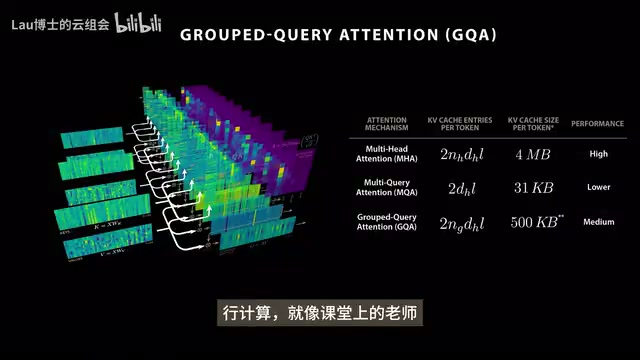
00:02:42–00:02:43 · 画面 03200:02:43–00:02:47 · 画面 033
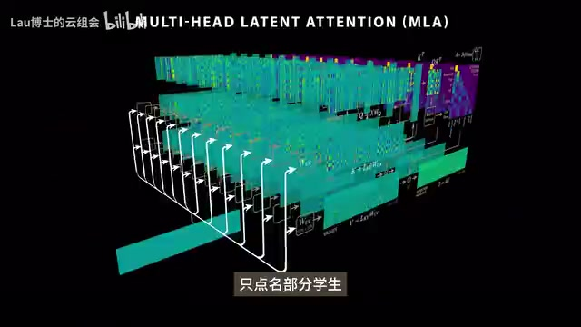
00:02:43–00:02:47 · 画面 033但这些经典的工作都有局限，递归模型缺乏自适应能力，早期退出 MOD 都没有充分的利用参数共享，这就为今天要讲 MOR 的框架来下了伏笔，它要同时实现参数共享和 Token 级的动态计算。听到这里不少同学可能就有预感，这不就是 A 加 B 加 C 的缝合工作吗？谷歌怎么沦落到成这个样子呢？其实有个反直觉的事情
00:02:47–00:02:50 · 画面 034
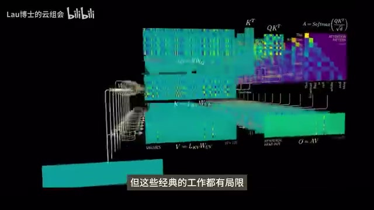
00:02:47–00:02:50 · 画面 03400:02:50–00:02:52 · 画面 035
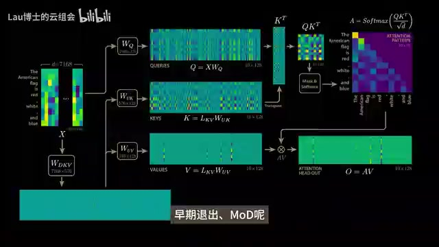
00:02:50–00:02:52 · 画面 03500:02:52–00:02:54 · 画面 036
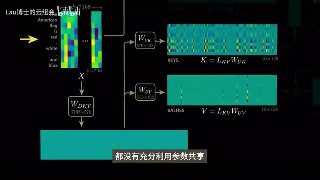
00:02:52–00:02:54 · 画面 03600:02:54–00:02:59 · 画面 037
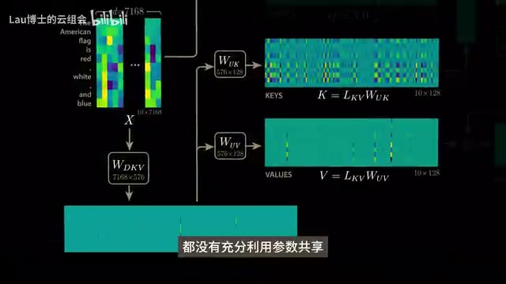
00:02:54–00:02:59 · 画面 03700:02:59–00:03:03 · 画面 038
00:02:59–00:03:03 · 画面 03800:03:03–00:03:18 · 画面 039
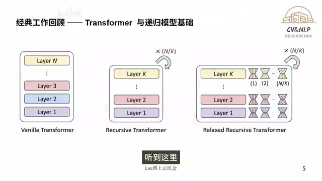
00:03:03–00:03:18 · 画面 039很多经典的工作都是缝合型的，比如 ResNet。没想到吧，残差也不是 ResNet 首创的，而是把残差缝进了卷积中。Swin Transformer 也是把图像局部性的先验知识缝进了 VITClip 就更不用说了，所以缝合并不低端，而是要看如何优雅的缝合，缝合后是否有效
00:03:18–00:03:19 · 画面 040
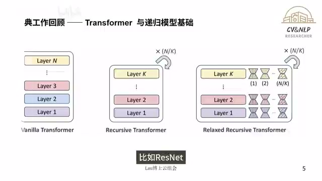
00:03:18–00:03:19 · 画面 04000:03:19–00:03:25 · 画面 041
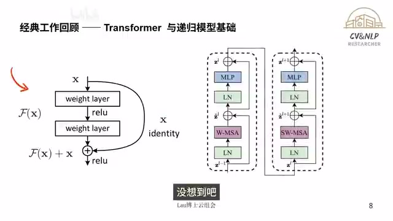
00:03:19–00:03:25 · 画面 04100:03:25–00:03:26 · 画面 042
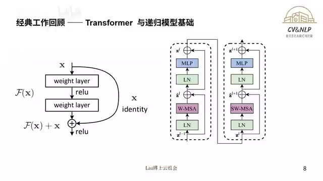
00:03:25–00:03:26 · 画面 04200:03:26–00:03:30 · 画面 043
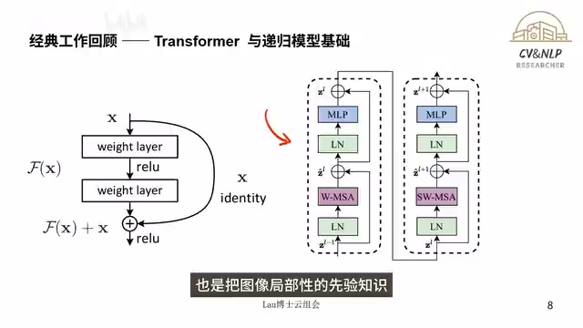
00:03:26–00:03:30 · 画面 04300:03:30–00:03:38 · 画面 044
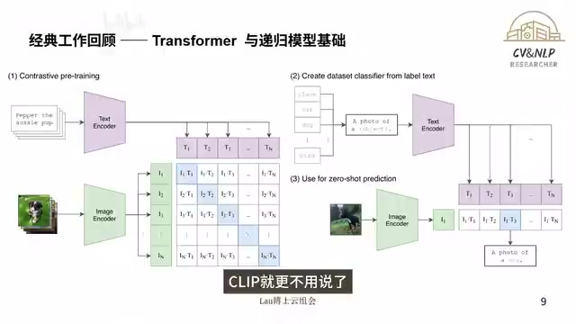
00:03:30–00:03:38 · 画面 04400:03:38–00:03:39 · 画面 045
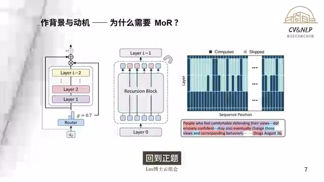
00:03:38–00:03:39 · 画面 045回到正题，在接下来的方法详解部分，我们就一起来看看 MOR 是如何同时实现参数共享和 token 级的动态计算的。说到这里，再给不熟悉我们的同学介绍一下本频道六博士云组会的自律，打造一站式人工智能交流平台，用尽可能好理解的语言让每位同学都能了解 AI 最前沿的内容
00:03:39–00:03:47 · 画面 046
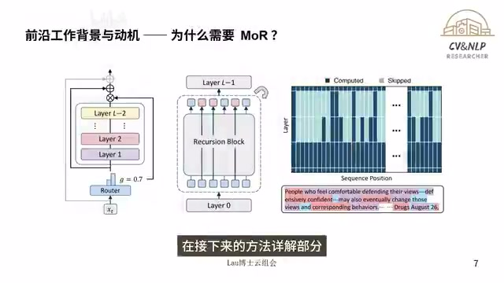
00:03:39–00:03:47 · 画面 04600:03:47–00:03:48 · 画面 047
00:03:47–00:03:48 · 画面 04700:03:48–00:03:56 · 画面 048
00:03:48–00:03:56 · 画面 04800:03:56–00:03:57 · 画面 049
00:03:56–00:03:57 · 画面 04900:03:57–00:04:06 · 画面 050
00:03:57–00:04:06 · 画面 050除了视频以外，也欢迎大家加入云组会的知识星球，我们做了三件事：第一，系统性的拆解了热门领域的学习路线，帮你的避开无效的努力；第二，每日更新精选文献解读，省去 80%的检索时间；三，建立专家学者交流群，不定期掉落福利，直接与专家学者互动交流，深度参与选题。云组会欢迎各位同学的加入，我们可以用一个例子来理解
00:04:06–00:04:07 · 画面 051
00:04:06–00:04:07 · 画面 05100:04:07–00:04:11 · 画面 052
00:04:07–00:04:11 · 画面 05200:04:11–00:04:14 · 画面 053
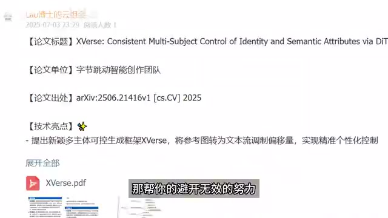
00:04:11–00:04:14 · 画面 05300:04:14–00:04:18 · 画面 054
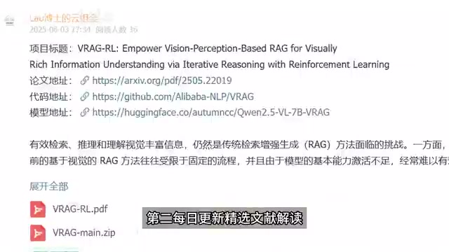
00:04:14–00:04:18 · 画面 05400:04:18–00:04:20 · 画面 055
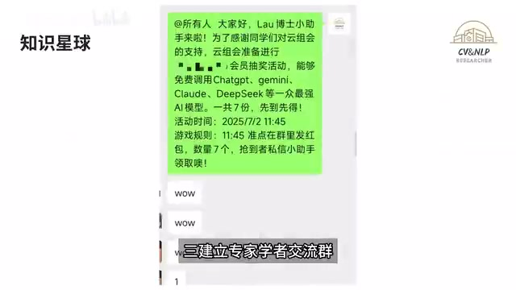
00:04:18–00:04:20 · 画面 05500:04:20–00:04:22 · 画面 056
00:04:20–00:04:22 · 画面 05600:04:22–00:04:24 · 画面 057
00:04:22–00:04:24 · 画面 05700:04:24–00:04:25 · 画面 058
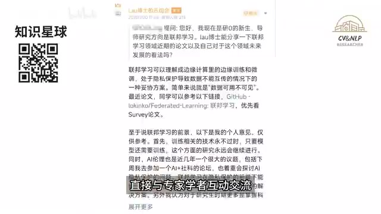
00:04:24–00:04:25 · 画面 05800:04:25–00:04:28 · 画面 059
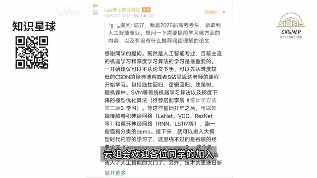
00:04:25–00:04:28 · 画面 05900:04:28–00:04:56 · 画面 060
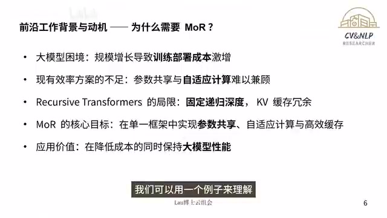
00:04:28–00:04:56 · 画面 060假设处理一句话，量子计算机利用量子叠加原理解决复杂问题，传统递归的模型会对每个 token 比如像量子计算机的都应用三次递归计算，即使得这样简单的词不需要这么多的计算。而早期的模型虽然能让得提前退出，但参数没有共享，模型的体积依然很大。另外传统的递归模型的 KV 缓存是为每个递归深度单独存储的，导致了内存的浪费。因此论文提出的 Mixture-of-Recursions MoR 框架核心是让模型聪明的决定每个 token 需要多少递归计算，参数共享加上自适应同时高效管理 KV 缓存，这就像给每个学生定制作业量，自适应的并且所有的连接共用一套教材，这就像是参数共享
00:04:56–00:05:54 · 画面 061
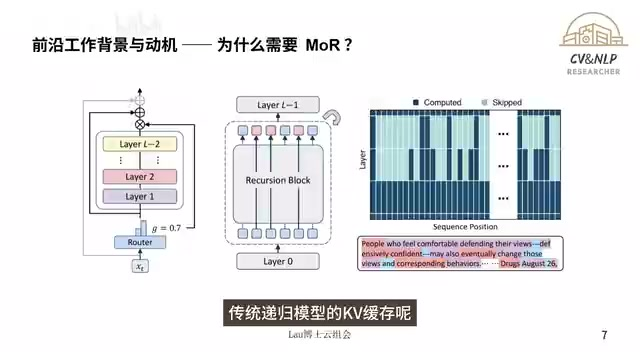
00:04:56–00:05:54 · 画面 061工具只放在需要的楼层进行高效的缓存。在第一章的贡献部分，作者就明确的指出这是首个统一这三种效率机制框架。最后图 5C 就显示了测试时的增加递归深度由像从两次到四次能提升性能，说明 MOR 支持按需扩展，那就有点类似学生遇到难题的时候可以申请加电。参数共享是 MOR 的基础，通过重复使用层参数减少模型的大小。MOR 尝试了四种策略，分别是 Cycle 循环复用乘，比如九乘分为三个块为 012 012 012Sequence
00:05:54–00:05:59 · 画面 062
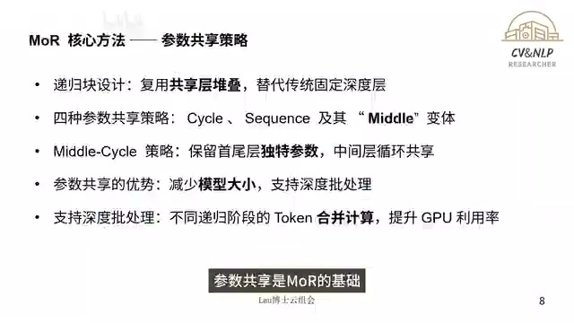
00:05:54–00:05:59 · 画面 06200:05:59–00:06:47 · 画面 063
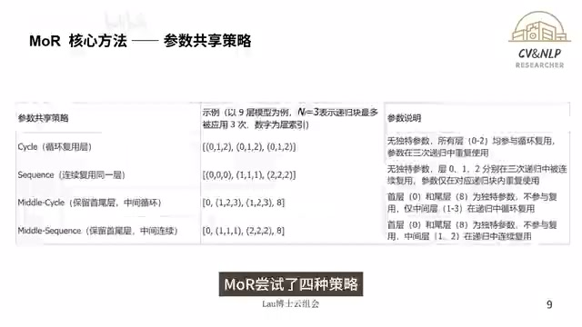
00:05:59–00:06:47 · 画面 063连续复用同一层，比如像 000111222Middle Cycle 保留首尾层的独特参数中间循环，比如像 01231238Middle Sequence 保留首尾层的独特参数中间连续，比如像 01112228 实验证明 Middle Cycle 是最优，既保证了输入输出层的独特性，又通过中间层共享大幅的减差同时支持深度批处理，不同阶段的 Token 可合并计算，减少 GPU 的空间为动态计算铺路。路由策略的实现按需计算，核心是为每个 Token 分配合适的递归次数，有两种方式，第一种是 Expert Choice，每层递归以后路由器根据 Token 的隐藏状态包含余信息打分
00:06:47–00:06:53 · 画面 064
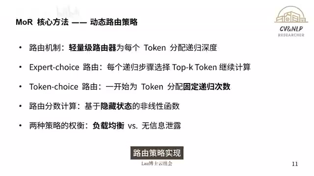
00:06:47–00:06:53 · 画面 06400:06:53–00:07:20 · 画面 065
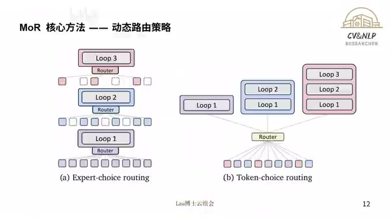
00:06:53–00:07:20 · 画面 065比如用 Sigmoid 函数生成 0 到 1 分选分数，最高的 Top-K Token 进入到下一层。例如第一次递归选前面的 50%第二次是从当中选前 30%逐层筛选需要重点关注的 Token，以深度学习推动
00:07:20–00:08:38 · 画面 066
00:07:20–00:08:38 · 画面 066自动价值技术发展为例假设 Beta 值的超参数设定为第一次递归 Beta 等于 50 也就是保留前 50%第二次设计成 Beta 等于 30 也就是保留前面的 30%留下有一个具体的过程第一次递归所有的 Token 的分数深度学习 0.9 推动 0.6 自动价值 0.85 技术 0.5 发展 0.7 按分数进行排列第 50%位的阈值是第三名的分数 0.7 因此分数大于 0.7 的 Token 都会被保留也就是深度学习自动驾驶发展第二次递归保留 Token 的分数是深度学习 0.88 自动驾驶 0.92 发展 0.65 做排序第三 10%位的阈值是第一名的分数 0.92 附近这个时候前两名都会被保留
那因为呢他们的分数非常的接近也就是 0.88 和 0.92 非常的接近也就是保留深度学习以及自动驾驶第三次递归那剩下的 Token 的分数呢分别是 0.91 和 0.89 那这个时候呢 Beta 等于 100 的时候也就是全部保留第二种是 Token Choice 那初始的时候呢基于 Token 的第一层的隐藏状态通过 Softmax 等函数呢计算其属于各递归深度的概率那概率最高的即为该 Token 的固定的递归次数
00:08:38–00:09:53 · 画面 067
00:08:38–00:09:53 · 画面 067以 MR 等于 3 为例假设当前有一批输入账本的 Token 对其中的一个 Token 苹果模型基于 D 层的隐藏状态通过 Softmax 的函数计算它属于不同递归深度的概率如果计算得到的概率为 0.1 0.3 0.6 这就表示苹果被分配到一次递归深度的概率是 0.1 被分配到两次递归深度的概率是 0.3 被分配到三次递归深度的概率是 0.6 由于三次的递归深度的概率最高所以苹果的 Token 就被确定要进行三次的递归计算在后续的计算过程当中苹果就会按照固定的三次递归深度依次通过相应的递归块进行处理 Expert Choice 能够均衡负载但可能会泄露未来的信息 Token Choice 无泄露
但易负载不均实验中前者的表现会更弱。KV 缓存用于存储注意力计算的键 K 和值 VMOR 针对动态路由设计了两种策略：递归级的缓存仅保存当前递归中活跃的 Token 的 KV 对，例如第一次递归缓存 100 个 Token，第二次筛选后只缓存 30 个，就像是只给当前参与者准备资料。
00:09:53–00:10:49 · 画面 068
00:09:53–00:10:49 · 画面 068减少内存占用和计算量，性能更优。递归共享的缓存所有递归的步骤复用第一次递归的 KV 对，因为所有的 Token 至少经过第一次的递归，就像用初始资料贯穿了全程，内存更加的节省，但计算量也会较高，适合内存紧张的部署，比如像手机。两者按需来选择追求性能用递归级内存有限的话用共享作者通过大量的实验证明了 MOR 的优势我们看三个关键的发现第一相同的计算量下 MOR 更加的高效比如在 16.5
00:10:49–00:10:59 · 画面 069
00:10:49–00:10:59 · 画面 06900:10:59–00:11:21 · 画面 070
00:10:59–00:11:21 · 画面 070乘上 10 的 18 次发 Flow 的预算下 Vanilla 的模型 315N 的参数要低少样本的准确率要高 43.1%比上 42.3%这就意味着用更少的参数 MOR 达到了更好的性能就像小排量的汽车跑赢了大排量第二
00:11:21–00:12:16 · 画面 071
00:11:21–00:12:16 · 画面 071规模越大 MOR 的优势越明显从 135M 到 1.7B 的参数 MOR 的验证损失始终是低于递归模型在 360M 以上规模甚至超过了 Vanilla 模型比如 730M 参数的时候 MOR 的损失就比 Vanilla 更接近更勇且参数仅为后者的三分之一第三推理速度大幅提升MOR 结合了动态退出，早期结束了简单的 Token 和深度批处理，合并不同阶段的 Token，吞吐量是原来的模型的两倍多。比如生成 256 个 Token 时，MOR 能够同时处理更多的序列，GPU 的利用率更高，更像高效的流水线。
持平了提前的下线，主线不停工。总结一下，MOR 通过三个创新点实现了高效的语言建模：一是用 MiddleCycle 的策略共享参数，减少模型大小；二是通过 Expert Choice 或者是 TokenChoice 路由，让每个 Token 获得了合适的递归深度；三是用递归级或是共享 KV 缓存降低了内存的成本。
00:12:16–00:13:39 · 画面 072
00:12:16–00:13:39 · 画面 072实验证明它在 135M 到 1.7B 参数规模下比传统模型和递归模型表现得更好同时推理的速度提升了两倍以上但 MOR 也有局限比如 Expert Choice 路由在训练后难以调整计算预算这就类似课程表定了就很难修改而且目前只验证到 1.7B 的参数更大规模的表现还需测试另外 MOR 本质上也是基于 Transformer 架构进行改进因此许多媒体所声称的 MOR 是 Transformer 的终结者并不合适未来作者计划将 MOR 应用于推理任务比如像数学题求解探索更大的模型并扩展到图像、语音等多模态领域
想象一下处理视频的时候呢，MOR 可以对关键帧，比如像爆炸画面用更多的递归，对静态帧用更少的计算，大幅的提升效率。以上是本期视频的全部内容，欢迎关注六博士的云组会，成为人工智能领域的专家。
00:13:39–00:13:43 · 画面 073
00:13:39–00:13:43 · 画面 07300:13:43–00:13:44 · 画面 074
00:13:43–00:13:44 · 画面 07400:13:44–00:13:45 · 画面 075
00:13:44–00:13:45 · 画面 075转写与来源说明 · 0 个自动复核提示
保留 34 个原始语音片段，0 个片段触发自动复核提示。提示仅用于定位可能的术语、重复或识别问题，不等于已确认错误。
讲解画面为源视频截图（640×360），不是可编辑 PPT 文件。全片按每秒 2 帧扫描内容变化，逐步展开页保留；连续动画保留代表画面。清晰度受源视频限制。
原视频：paper/合集_2026-10-16_论文精读/谷歌DeepMind再放大招！推理提速100%，KV缓存减半：MoR【论文精读】.mp4
SHA-256：ab45388af5bd4a4f18b999cb2077be5e35205ccfc271d25afda354ed462c1e13
全文按视频语音与画面制作。原论文可从上方链接下载；完整资料包保留全文、原始逐字稿、字幕和校对记录。